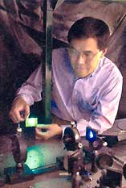

Forget about building a better mousetrap - scientists at the Department of Energy's Sandia Laboratories in New Mexico are working with colleagues at Brown University to develop a better light bulb - an ultraviolet, vertical-cavity surface-emitting laser.
The technology is expected to save $100 billion a year in energy costs worldwide, to reduce carbon emissions by about 350 million tons annually, and to take up less landfill space. The lights are expected to last five to ten times longer than fluores cents.
Less energy demand, of course, benefits the environment. As Sandia spokesman Neal Singer explains, "A lot of our arguments about power plants would be academic - you just wouldn't build as many of them." The lights may also inspire aesthetic creativity - the postage stamp-size chips can be arranged almost anywhere near an electric outlet in any conceivable pattern.
But before they get carried away with design, the scientists at Sandia need to find a way to electrically power the lasers - a crucial step that is one to two years away. Right now, this technology is only a prototype, as Singer says, "It's a toddler - hardly crawling yet - we need to make it grow up."
-Kristina Mastrocola
|
 |
|
|